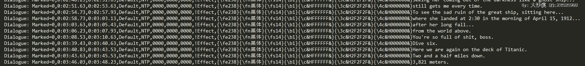
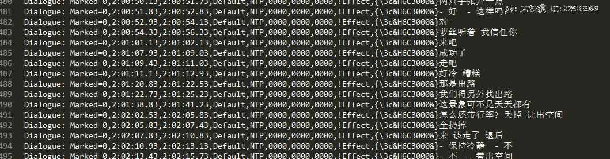
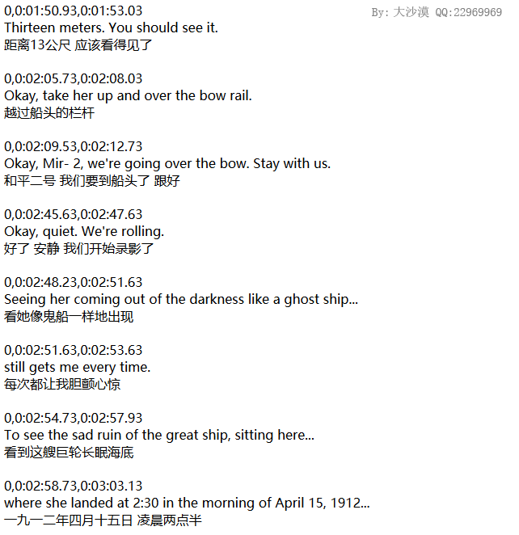

原文出处:本文由博客园博主大沙漠提供。
原文连接:https://www.cnblogs.com/greatdesert/p/11326476.html
原文连接:https://www.cnblogs.com/greatdesert/p/11326476.html
网上搜了一下看看有没有泰坦尼克号完整台词，找了好久也没找到合适的，要么不完整，要么收费，要么数据是错乱的,预期的台词是一个有中英文对照版的，然后按照格式一行行的排列，比如一行英文，一行中文，外加一行对应电影的时间
怎么办呢，想到了电影里的字幕，字幕里有数据的，数据格式也是统一的，我们利用正则提取一下就好了，开干
首先下载字幕,我在网上下载了一个，点击这个图片下载字幕文件: (点击这个图片，下载后把后缀名改成ssa就可以了)
(点击这个图片，下载后把后缀名改成ssa就可以了)
然后查找文件里的规律，如下:
对于英文和中文有两种格式，对于英语来说，格式如下:

对于中文来说，格式如下:

思路
可以看到前面部分差不多的，后面的字幕之前有几个字符不一样，例如英文字幕是0000&}结尾的，而中文字幕是3000&}结尾的
我们可以用两个正则分别提取英语和中文的字幕信息，保存到对应的数组里，数组里的键名为字幕的时间，是个字符串格式，值可以是个数组，分别是对应的字幕
完整代码如下:
<?php
$str = file_get_contents('./zimu.ssa'); //load ssa file
function getResult($preg){ //get Subtitle interface
global $str;
$result = array();
if(preg_match_all($preg,$str,$match,PREG_OFFSET_CAPTURE)){
foreach($match[1] as $key => $val){
$result[trim($val[0],',')]=$match[2][$key][0];
}
}
return $result;
}
$result_en = getResult('/Marked=([^D]*).*?0000&}(.*)/'); //获取英文字幕
$result_cn = getResult('/Marked=([^D]*).*?3000&}(.*)/'); //获取中文字幕
$result = array();
$result_en = array_filter($result_en,function($val,$key) use(&$result,&$result_cn){ //将字幕合并到$result数组里
if(isset($result_cn[$key])){
$result[$key] = array($val,$result_cn[$key]);
unset($result_cn[$key]);
}else
return true;
},ARRAY_FILTER_USE_BOTH );
function out($arr,$isarr=1){ //out inteface
foreach($arr as $key => $val){
if($isarr)
echo $key."<br/>".$val[0]."<br/>".$val[1]."<br/><br/>";
else
echo $key."<br/>".$val."<br/><br/>";
}
}
out($result); //输出中文和英文有对应的字幕
out($result_en,0); //输出只有英文的字幕
out($result_cn,0); //输出只有中文的字幕
?>部分输出如下:

OK，It's Perfect~
下一篇贴出完整的字幕
正则里也遇到个问题，理想中[^D]改成[^(?:,D)]的话在getResult里就不需要调用trim()过滤掉末尾的,符号了，但是在php里(?:)不能用，可能php的正则引擎不支持这个功能吧，以后如果再深入研究的话再看看。